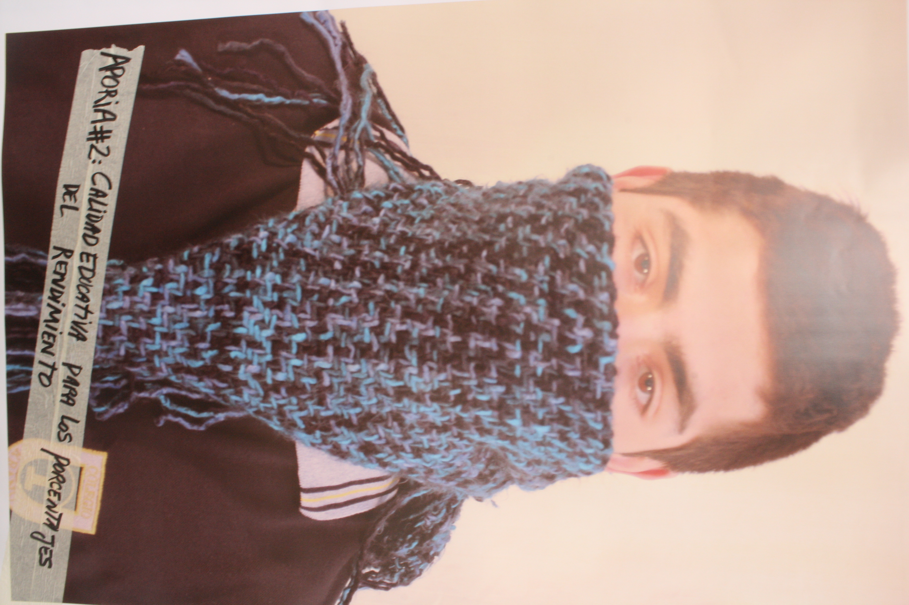
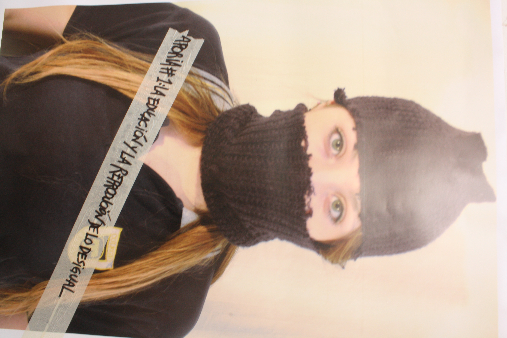
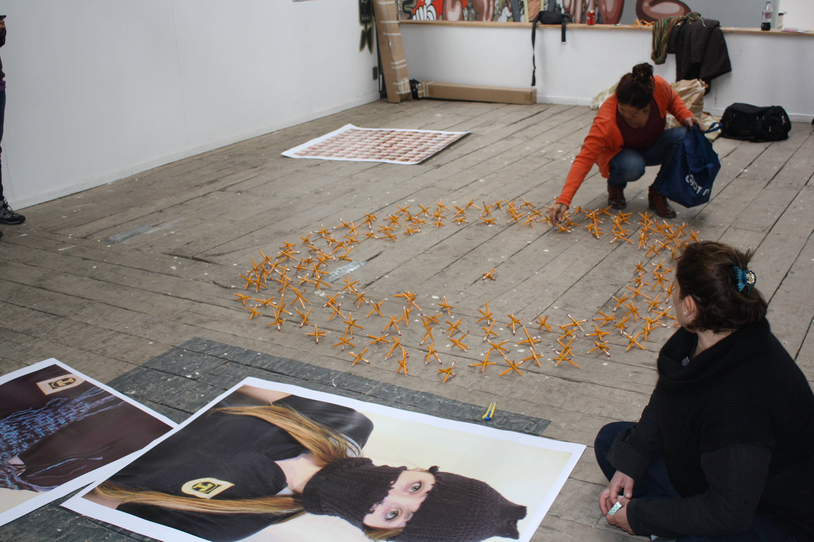
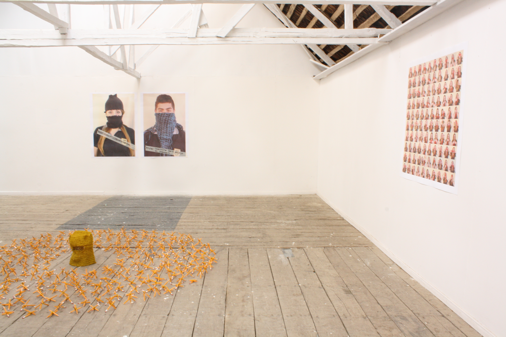
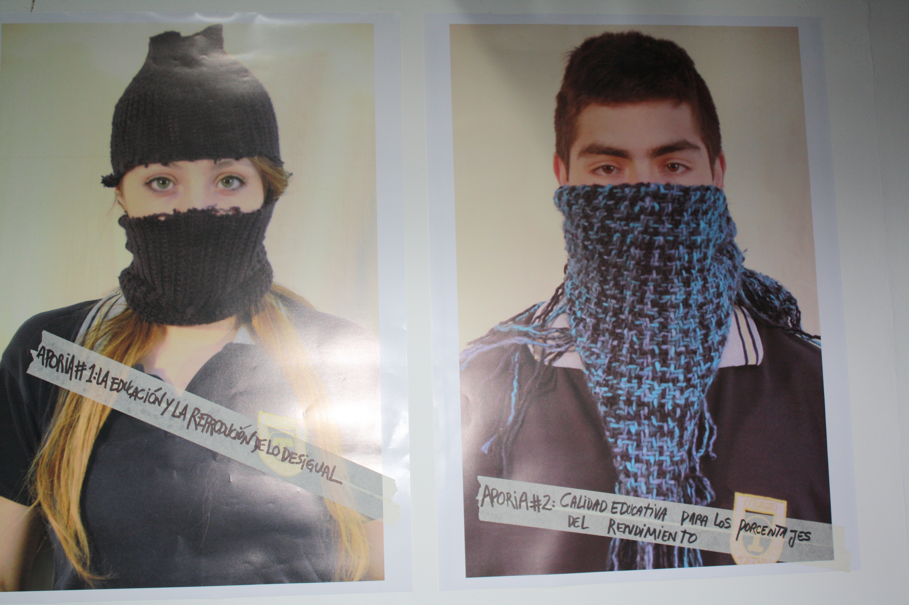
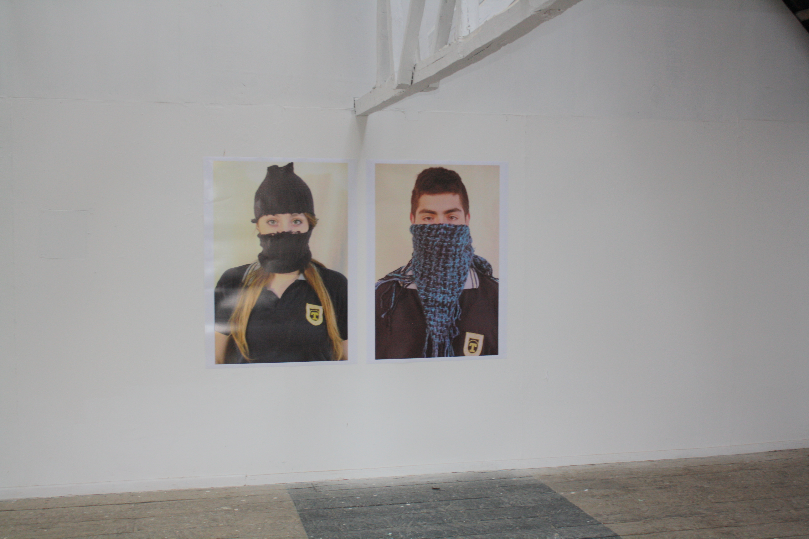
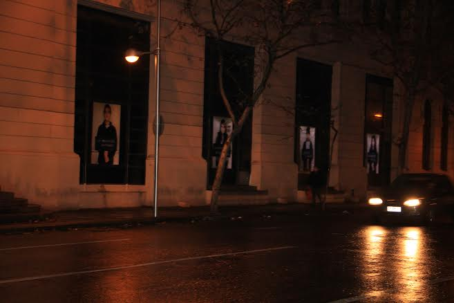
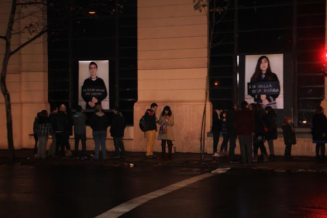

"Resistencia"
Registro fotográfico y exploración visual en torno a materialidad, espacio y procesos de trabajo.










Registro fotográfico y exploración visual en torno a materialidad, espacio y procesos de trabajo.







